Diferentes Mitologias

Mitologia Grega
A mitologia Grega pode ser definida como uma junção das antigas
crenças religiosas e mitos tradicionais de suas culturas.
Os gregos eram politeístas e acreditavam que seus deuses eram
imortais, apesar de terem sentimentos, qualidades e defeitos como
qualquer ser humano.
Gerações Divinas
Deuses Primordiais

Caos
-

Tártaro
Abismo
-

Eros
Atração e criação
-

Gaia
Terra
-

Nyx
Noite
-

Érebo
Escuridão

Urano
(filho de Gaia)
Céu
Os deuses primordiais foram as primeiras entidades a existir e representavam os elementos fundamentais do universo. Segundo a mitologia grega, tudo começou com Caos, o vazio primordial. A partir dele surgiram outras divindades, como Gaia, Tártaro, Eros, Nix e Érebo. Gaia deu origem a Urano, que se tornou seu companheiro. Dessa união nasceram diversas criaturas poderosas, incluindo os Titãs. Os deuses primordiais não governavam o mundo como os olímpicos, mas eram responsáveis pela existência e pela organização inicial do cosmos.
Os Titãs
Segunda geração divina
-

Cronos
Deus do tempo
-

Reia
Deusa da maternidade
-

Oceano
Deus dos mares
-

Hipérion
Deus do fogo
-

Jápeto
Deus da mortalidade
-

Têmis
Deusa da Justiça
Urano temia seus filhos e os mantinha aprisionados. Revoltada, Gaia ajudou Cronos a derrubar o pai. Após essa vitória, Cronos tornou-se o governante do universo. Porém, uma profecia dizia que ele também seria destronado por um de seus filhos. Para evitar isso, Cronos passou a engolir cada filho que nascia. Reia conseguiu salvar seu filho mais novo, Zeus, escondendo-o. Quando adulto, Zeus retornou para enfrentar Cronos e libertar seus irmãos, iniciando a guerra que marcou a passagem para a terceira geração divina.

Os Deuses Olímpicos
Terceira geração divina
-

Zeus
Deus dos trovões
-

Hera
Deusa do casamento
-

Poseidon
Deus dos mares
-

Atena
Deusa da sabedoria
-

Ares
Deus da guerra
-

Apolo
Deus da luz
-

Ártemis
Deusa da caça
-

Afrodite
Deusa do amor
-

Hermes
Deus do comércio
-

Hefesto
Deus da forja
-

Deméter
Deusa da agricultura
-

Dionísio
Deus das festas e da vinicultura

Os deuses olímpicos formam a terceira e mais famosa geração da mitologia grega. Eles receberam esse nome porque viviam no Monte Olimpo, a montanha considerada a morada dos deuses. Após uma grande guerra chamada Titanomaquia, Zeus e seus irmãos derrotaram os Titãs. Depois da vitória, os três principais irmãos dividiram o domínio do universo: Zeus tornou-se o governante dos céus, Poseidon recebeu os mares e Hades passou a governar o mundo dos mortos.

Povos Maias - América central
Os Maias foram uma das principais civilizações da Mesoamérica.
Eles se desenvolveram em regiões que atualmente correspondem ao
México, Guatemala, Belize, Honduras e El Salvador.
Sua civilização começou a se desenvolver por volta de 1800 a.C. e
alcançou seu auge entre 250 d.C. e 900 d.C. Os Maias ficaram
conhecidos por suas grandes cidades, conhecimentos de Matemática e
Astronomia, sistema de escrita e construções monumentais.
Organização Política e Sociedade
A sociedade era hierarquizada. No topo estavam o rei, a nobreza e
os sacerdotes, enquanto a maior parte da população era formada por
camponeses. A agricultura tinha grande importância, principalmente
o cultivo do milho.
Os Maias eram politeístas e acreditavam em vários deuses
relacionados à natureza, aos astros e ao cotidiano. Acreditavam
que os deuses influenciavam o funcionamento do Universo e, por
isso, realizavam cerimônias e oferendas religiosas.
-
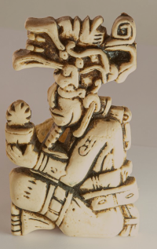
Itzamná
Criação e conhecimento
-
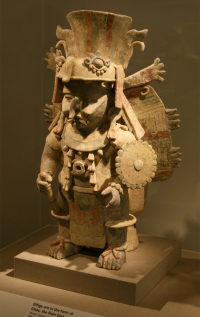
Chac
Chuva e água
-
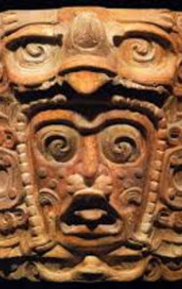
Kinich Ahau
Sol
-
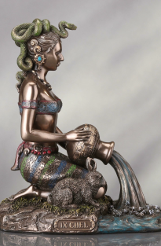
Ix Chel
Lua e fertilidade
Matemática e Astronomia
Os Maias desenvolveram conhecimentos avançados de Matemática.
Utilizavam um sistema de numeração baseado no número 20 e
conheciam o conceito do zero.
Na Astronomia, observavam os astros e desenvolveram diferentes
calendários. Um deles era o Tzolk'in, calendário religioso baseado
em ciclos de 260 dias.
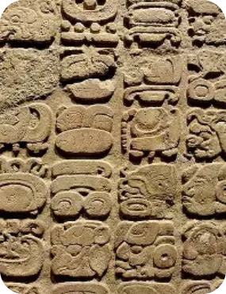
Escrita
Os Maias desenvolveram um sistema de escrita baseado em hieróglifos. Por meio dele, registravam acontecimentos históricos, informações religiosas e outros aspectos de sua sociedade. Parte do conhecimento sobre sua escrita foi preservada em antigos manuscritos conhecidos como códices de Dresden, Madrid e Paris.
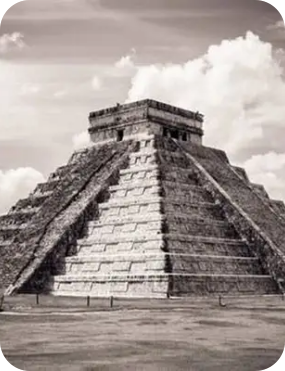
Arquitetura
A arquitetura maia ficou conhecida por suas grandes construções, como templos, pirâmides, palácios, praças e centros cerimoniais. Muitas dessas construções permanecem preservadas como sítios arqueológicos e ajudam a compreender melhor a história e a cultura dos povos maias.
Principais Cidades
-
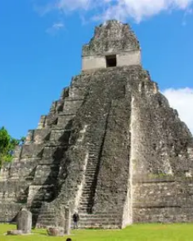
Tikal
-
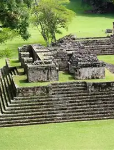
Copán
-
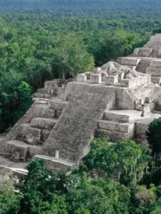
Calakmul
-
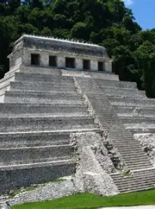
Palenque
-
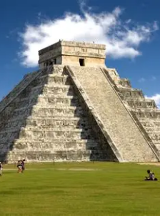
Chichén Itzá
Curiosidades:
Os Maias não desapareceram completamente. Apesar do declínio de várias cidades antigas, milhões de descendentes dos povos maias continuam vivendo atualmente na Mesoamérica, mantendo diferentes tradições, culturas e línguas indígenas.

Povos Iorubás — África Ocidental
Os Iorubás são um dos principais grupos étnicos da África
Ocidental, principalmente na Nigéria, mas também presentes no
Benim, Togo e Gana. Sua cultura possui milhares de anos de
história e teve grande influência no Brasil.
Os Iorubás se estabeleceram ao sul do Rio Níger e desenvolveram
importantes cidades, como Ilê-Ifé. Com o tempo, formaram reinos
como Ifé e Oió, que se tornou uma importante potência política e
militar da região
Religião e Cultura
A religião tradicional iorubá possui diversos orixás, relacionados a diferentes forças e aspectos da vida.
Entre esses aspectos:
-

Olodumarê
Criador do universo
-

Xangô
Ligado a trovão, fogo e justiça
-

Iemanjá
Ligado a águas doces
-

Oxum
Ligado a rios e lagos
-

Ogum
Ligado ao ferro e à guerra
-

Oxóssi
Ligada a caças e florestas
A cultura iorubá se destaca pela arte, música, dança, escultura,
metalurgia e tradição oral. Os Iorubás desenvolveram técnicas com
ferro, bronze e latão e transmitiam histórias e conhecimentos
principalmente por meio da oralidade.
A língua iorubá pertence ao grupo nigero-congolês. Durante a
diáspora africana, sua língua e cultura chegaram às Américas e
deixaram importantes marcas no Brasil, inclusive em palavras como
acarajé, fubá e jabá.
Curiosidades:
Ilê-Ifé é considerada um dos grandes centros históricos e culturais dos Iorubás. A cidade ficou especialmente conhecida por sua produção artística, com esculturas e cabeças feitas em bronze, latão e terracota, que apresentam grande riqueza de detalhes e mostram o alto nível técnico dos artistas da região.

Povo Inca — América do Sul
Os Incas formaram uma das maiores civilizações da América pré-colombiana. Seu império surgiu na região de Cusco, no atual Peru, e se expandiu por partes do Equador, Bolívia, Chile e Argentina. O Império Inca atingiu seu auge entre 1438 e 1532 d.C., reunindo diferentes povos em um grande território.

História E Sociedade
O Império Inca era governado pelo Sapa Inca, considerado uma figura sagrada e descendente do deus Sol, Inti. A sociedade era hierarquizada, com nobres e autoridades no topo, enquanto agricultores, artesãos e soldados formavam grande parte da população. Uma importante forma de organização era o ayllu, grupo de famílias que trabalhava coletivamente. A agricultura era essencial para a sociedade, principalmente o cultivo de milho, batata e outros alimentos adaptados às diferentes regiões do império.
Religião e Cultura
Os Incas eram politeístas e acreditavam em vários deuses relacionados à natureza e ao universo. Inti era o deus do Sol, Mama Quilla representava a Lua, Pachamama estava ligada à terra e à fertilidade, e Viracocha era considerado o deus criador. Cerimônias e oferendas faziam parte da vida religiosa.
-

Inti
Sol
-

Mama Quilla
Lua
-

Pachamama
Terra e fertilidade
-

Viracocha
Criador e destruidor

Arquitetura
A arquitetura foi uma das maiores marcas da civilização Inca. Eles construíram templos, fortalezas, cidades e uma extensa rede de estradas. Suas construções utilizavam grandes pedras encaixadas com muita precisão, sem a necessidade de argamassa em algumas estruturas. O exemplo mais conhecido é Machu Picchu, uma antiga cidade construída nas montanhas do atual Peru. A construção demonstra o domínio dos Incas sobre arquitetura, engenharia e adaptação ao ambiente.
Curiosidades:
Os Incas utilizavam um sistema chamado ceque, formado por linhas que partiam de Cusco e conectavam diferentes locais considerados sagrados. Esse sistema estava relacionado à religião, à organização da sociedade e à observação do espaço.

Xintoísmo – Japão
O Xintoísmo Shinto é a espiritualidade tradicional do Japão, baseada na adoração dos kami (espíritos ou divindades). Originado no Japão arcaico, não possui um fundador ou livro sagrado, sendo uma filosofia de vida voltada para a harmonia entre o homem e a natureza

História E Sociedade
As raízes do xintoísmo remontam ao período Yayoi (300 a.C. – 300 d.C.). A sociedade japonesa é profundamente influenciada por esta crença, que estabelece uma linhagem imperial contínua descendente da deusa do sol, Amaterasu. Ao contrário de muitas religiões, o xintoísmo coexistiu e fundiu-se com o Budismo ao longo dos séculos, formando uma cultura religiosa sincrética onde rituais de vida nascimentos e casamentos são xintoístas e ritos fúnebres são budistas
Religião e Cultura
A crença central é o animismo: a ideia de que todas as coisas, vivas ou não, possuem uma essência espiritual ou kami. Os praticantes buscam a pureza espiritual e moral, acreditando que os seres humanos são fundamentalmente bons, mas podem ser corrompidos por impurezas físicas ou espirituais. A prática religiosa envolve rituais, oferendas e festivais para honrar os kami e manter a harmonia entre o mundo humano e o espiritual.
-

Amaterasu
Deusa do Sol e ancestral da família real
-

Inari
Divindade da agricultura, arroz, fertilidade e sucesso nos negócios
-

Susanoo
Deus das tempestades e dos oceanos
-

Tsukuyomi
Deus da Lua e do tempo lunar

Arquitetura
O coração da religião é o santuário jinja, muitas vezes cercado pela natureza. A entrada é marcada pelo portal Torii, que simboliza a transição do mundo comum para o sagrado. Uma prática arquitetônica única é a reconstrução ritual periódica, como no Grande Santuário de Ise, que é totalmente reconstruído a cada 20 anos para manter a pureza e a continuidade das tradições.
Curiosidades:
Os festivais, ou matsuri, são essenciais para celebrar os kami locais e pedir proteção ou boas colheitas. O ritual Shichi-go-san celebra o crescimento de crianças de 3, 5 e 7 anos nos santuários, enquanto o Setsubun envolve a expulsão de espíritos malignos com feijões. O Tanabata celebra a lenda das estrelas Orihime e Hikoboshi, e o Obon homenageia os espíritos ancestrais com danças e lanternas flutuantes.
Povo Māori – Aotearoa (Nova Zelândia)
Os Māori são os indígenas polinésios da Nova Zelândia, cuja cultura é fundamentada na conexão espiritual entre todos os seres vivos através da genealogia (Whakapapa).
História E Sociedade
A organização social gira em torno do marae (terras comunais) e de subdivisões tribais conhecidas como iwi e hapu. Os Māori atuam como guardiões (kaitiaki) de sua herança cultural, tendo a obrigação ancestral de proteger a essência espiritual (mana) e a sacralidade (tapu) de suas terras e edifícios.
Religião e Cultura
A cosmogonia Māori começa com os pais primordiais: Ranginui (Pai Céu) e Papatuanuku (Mãe Terra), cujos filhos se tornaram as divindades que governam o mundo natural. Existe uma forte crença no mauri (força vital) que reside em todas as coisas.
-

Tāne
Deus das florestas e das aves; criador dos primeiros seres humanos.
-

Tangaloa
Personificação do oceano e ancestral de todos os peixes.
-

Rongo
Divindade da paz e da agricultura (plantas cultivadas).

Arquitetura
A construção mais emblemática é a Wharenui (casa de encontros), que representa o corpo de um ancestral tribal. O topo do telhado é o rosto; as vigas são os braços abertos para acolher; e a viga mestre representa a espinha dorsal. Essas casas são decoradas com entalhes em madeira, tecelagem de treliça (tukutuku) e pinturas artísticas que narram a história e a linhagem da tribo.
Curiosidades:
As orações ou encantamentos rituais, chamados de Karakia, são usados para tudo, desde atrair peixes até limpar espiritualmente uma casa após um funeral. A arte corporal, como as tatuagens faciais e corporais (moko), desempenha um papel central na identidade e no prestígio social.